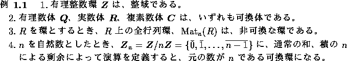

を とも書く。
を とも書く。
体は、整域である。

以下では、有理整数環  とともに、非常に重要な可換環である多項式環について基本事項を学ぶ。
とともに、非常に重要な可換環である多項式環について基本事項を学ぶ。
可換環 R の元を係数とする文字 x の整式
を x を不定元とする R の多項式といい、x を不定元という。また、 で、x を不定元とする R 上の多項式全体を表すものとする。
で、x を不定元とする R 上の多項式全体を表すものとする。
を  の元とするとき、和および積を以下のように定義する。
の元とするとき、和および積を以下のように定義する。
この演算に関して  は環になる。これを、R 上の多項式環という。
は環になる。これを、R 上の多項式環という。
の時、 と書き f の次数という。 の時は、 とする。
と書き f の次数という。 の時は、 とする。
(1) (2) ともに明らか。fg = 0 とする。(2) を用いると、
従って、 または 。すなわち、f = 0 または g = 0 を得る。
、、 とする。まず、n<m の時は、q = 0、r = f とすれば良い。
 と仮定し、 に関する帰納法で証明する。 は、仮定より正則元だから、逆元が存在する。 とすれば、f の最高次の係数が消えるから、。従って、帰納法の仮定より、
と仮定し、 に関する帰納法で証明する。 は、仮定より正則元だから、逆元が存在する。 とすれば、f の最高次の係数が消えるから、。従って、帰納法の仮定より、 の元 で、 かつ、 となるものがある。従って
の元 で、 かつ、 となるものがある。従って
と表される。よって、 と置けばよい。
と置けばよい。
R を整域とし、一意性を示す。
とする。すると、。ここで、次数を比べると、
より、。従って、。すなわち、、 を得る。
n 変数多項式環は、帰納的に、 によって定義する。この元は、一般には、次のように書ける。
また、 と見ることも出来る。